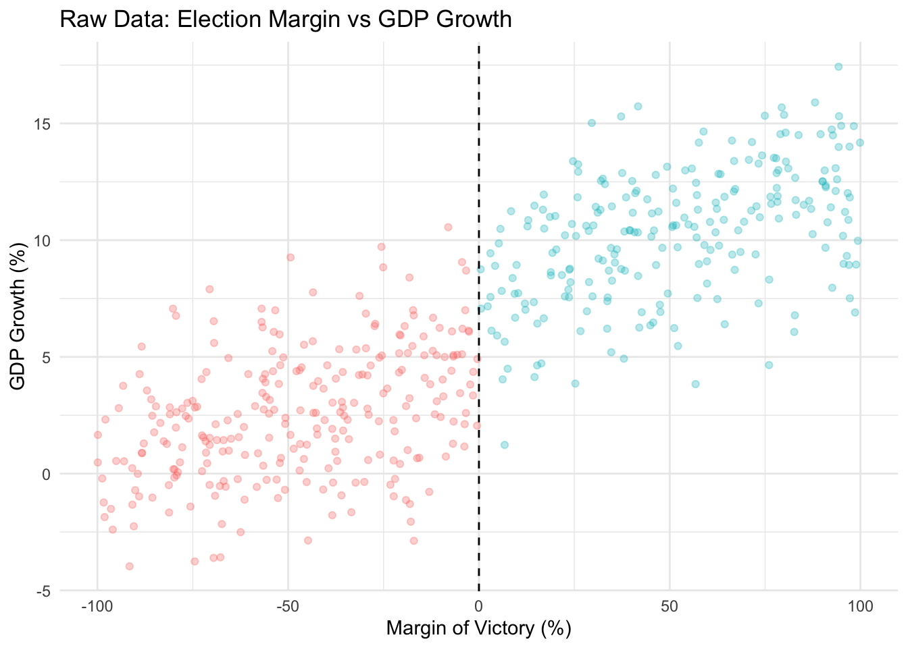
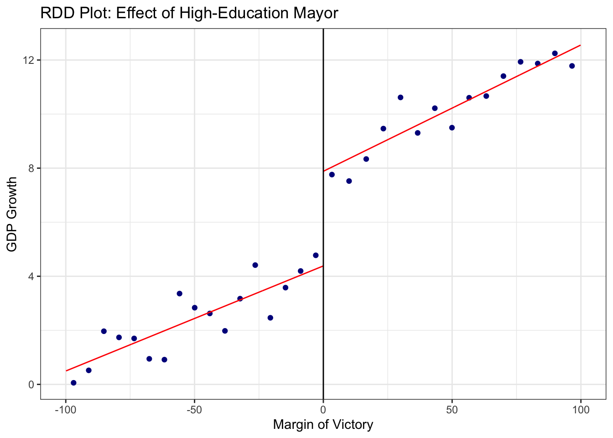
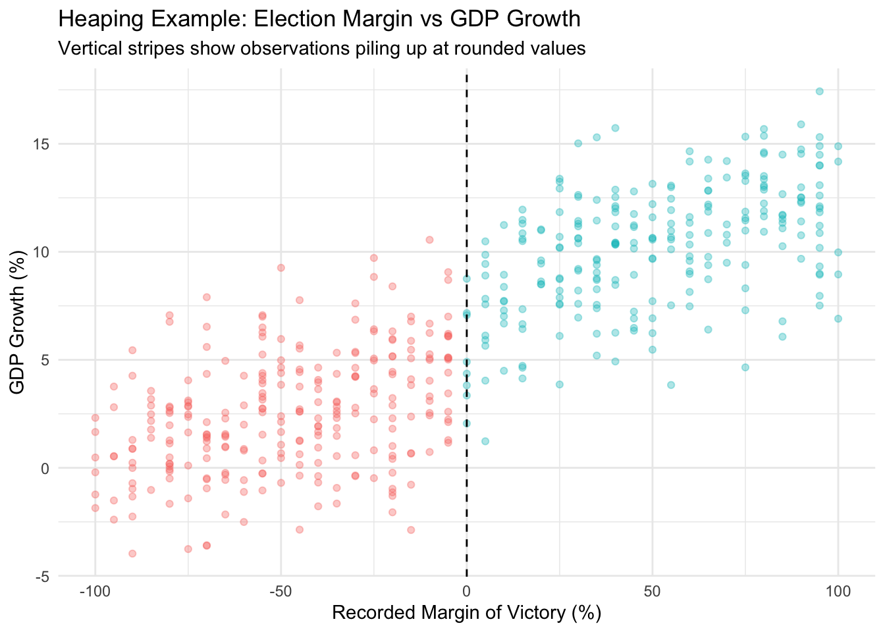
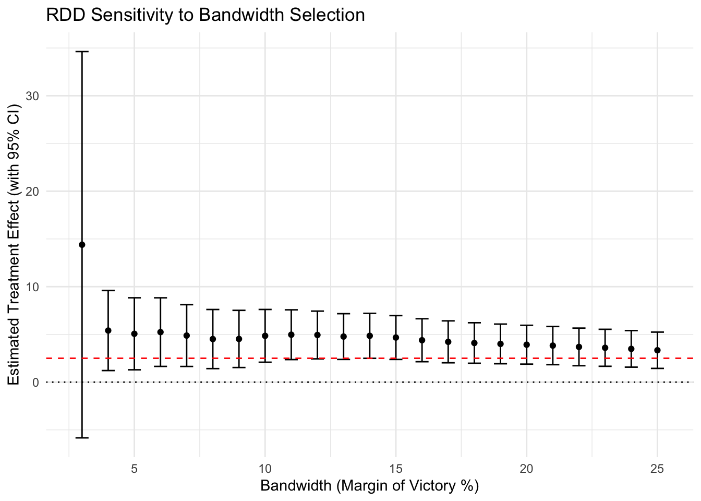
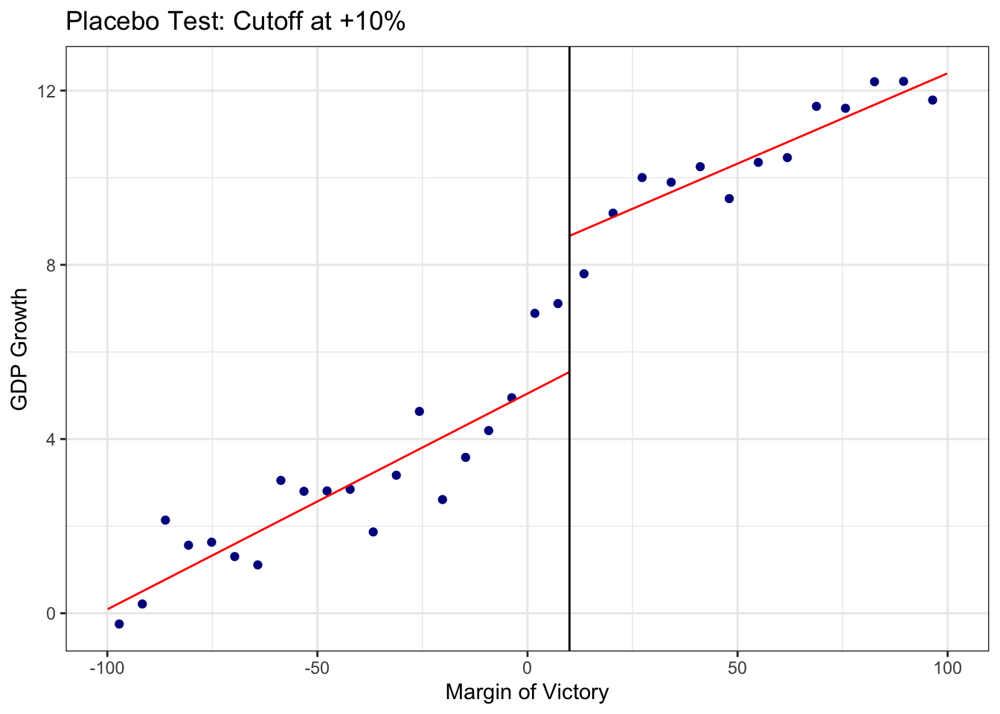
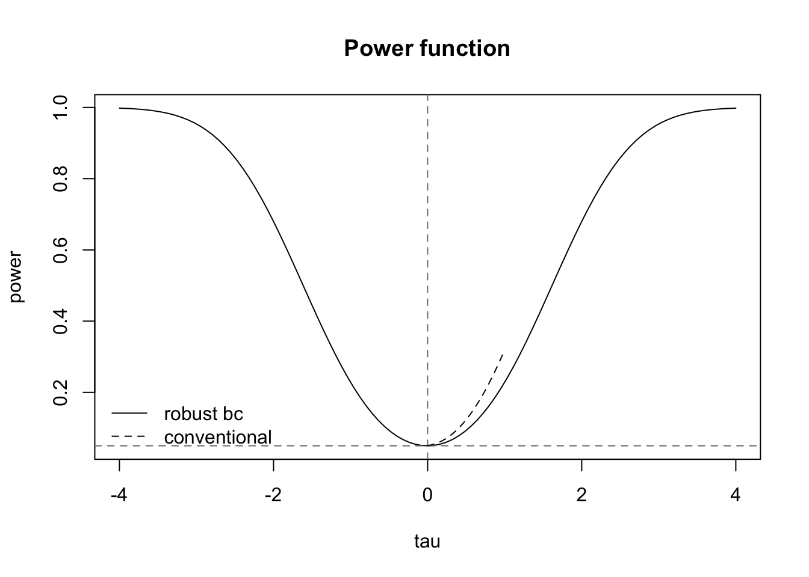

Code
library(rdrobust)
library(ggplot2)
library(dplyr)
library(magrittr)
df <- readr::read_csv(
paste0(
here::here("research-guides/rdd/"),
"assets/data/rdd_data.csv"
),
show_col_types = FALSE
)This guide introduces Regression Discontinuity Design (RDD) for causal inference when treatment is assigned by a threshold rule. Using a running example – whether highly educated mayors improve city economic growth – it covers the continuity assumption, sharp and fuzzy RDD estimation, bandwidth selection, robustness checks (McCrary density test, placebo tests, specification and bandwidth sensitivity), and common pitfalls in applied practice.
regression discontinuity, causal inference, running variable, cutoff, local average treatment effect, bandwidth selection, McCrary density test, fuzzy RDD, sharp RDD, placebo tests
Regression Discontinuity Design (RDD) is one of the most widely used tools in the causal inference toolkit. It is especially useful when treatment is assigned by a clear rule: units just above a cutoff receive a treatment, while units just below the cutoff do not. When the cutoff is applied consistently, researchers can compare observations very close to the threshold and estimate a causal effect in a non-experimental setting.
This guide assumes that readers have some background in causal inference and basic regression. In particular, it assumes familiarity with the idea of omitted variable bias, the difference between correlation and causation, and how regression models can be used to estimate relationships between variables. The goal of this guide is to show how RDD builds on those ideas to estimate causal effects when treatment assignment depends on a cutoff.
RDD is useful for questions where a rule creates a sharp contrast between treated and untreated cases. For example, students may receive a scholarship if their test score is above a threshold, municipalities may receive a grant if their population crosses a cutoff, or a political candidate may win office if their vote share exceeds 50 percent. In each case, observations near the cutoff are likely to be similar to one another, except for whether they received the treatment.
Consider this running example: Do mayors with higher education levels improve their city’s economic growth?
Estimating this causal effect is challenging. Highly educated candidates may be more appealing to voters because they are perceived as more competent, or they may run in cities that are already wealthier and can attract stronger candidates. If we simply compare cities with highly educated mayors to cities without highly educated mayors, our estimate may be biased by these confounding factors.
Ideally, we would run a randomized experiment: assign a high-education mayor to some cities and a low-education mayor to others. But this is politically impossible. Instead, RDD offers a quasi-experimental approach. In close elections, the winner is often determined by a very small margin. A highly educated candidate who wins with 50.1 percent of the vote is likely to be very similar to one who loses with 49.9 percent. Around this threshold, the election outcome is plausibly “as-if random.”
RDD uses this logic to estimate the effect of barely crossing the cutoff. In this example, the running variable is the vote share of the highly educated candidate, the cutoff is 50 percent, and the treatment is whether the city elects a highly educated mayor. The key comparison is between cities where the highly educated candidate barely won and cities where the highly educated candidate barely lost.
RDD is a model-based approach. Rather than simply comparing all treated and untreated cases, we estimate whether there is a discontinuous jump in the outcome at the cutoff. In practice, this usually means fitting regression models on either side of the threshold and estimating the size of the jump exactly at the cutoff. The identifying assumption is that, absent treatment, potential outcomes would have changed smoothly at the threshold. If we observe a sharp break at the cutoff, we attribute that break to the treatment.
RDD can be applied across many disciplines:
| Discipline | Example Question | Running Variable | Cutoff | Treatment |
|---|---|---|---|---|
| Political Science | Do highly educated mayors increase city economic growth? | Vote share of the highly educated candidate | 50% | Highly educated candidate wins |
| Education | Do scholarships improve college enrollment? | Exam score or GPA | Scholarship eligibility threshold | Student receives scholarship |
| Public Health | Do health insurance expansions improve health outcomes? | Age, income, or risk score | Eligibility threshold | Individual receives coverage |
| Criminology | Do harsher sentences reduce reoffending? | Sentencing score | Sentencing threshold | Defendant receives longer sentence |
The strength of RDD is that it can produce credible causal estimates without random assignment. Its limitation is that the estimate is local: it tells us the effect of treatment for cases near the cutoff, not necessarily for all cases. In the mayoral example, RDD estimates the effect of electing a highly educated mayor in very close elections, not the effect of highly educated mayors in all cities.
This guide introduces the basic intuition, assumptions, estimation strategy, and interpretation of RDD. We will use the mayoral education example throughout to show how researchers move from a substantive causal question to an empirical design.
The core intuition of RDD rests on the continuity assumption: in the absence of treatment, the expected outcome would change smoothly across the threshold. Any jump at the cutoff can therefore be attributed to the treatment, provided units just above and below the threshold are comparable.
Use RDD when the assignment rule is threshold-based and units near the cutoff are plausibly similar except for treatment status. That logic works for close elections, exam cutoffs, age thresholds, and policy eligibility rules.
Do not use RDD if the threshold is arbitrary but unrelated to assignment, if there is strong evidence of sorting around the cutoff, or if the estimand of interest is inherently global rather than local.
Let:
RDD is easiest to understand in potential outcomes notation. Let \(Y_i(1)\) be the outcome if unit \(i\) is treated and \(Y_i(0)\) the outcome if it is not treated. The observed outcome is
\[ Y_i = D_i Y_i(1) + (1-D_i)Y_i(0). \]
The treatment effect at the cutoff is the difference in expected potential outcomes right above and right below the threshold:
\[ \tau_{RDD} = \lim_{x \to c^+} E[Y_i(1) - Y_i(0) \mid X_i = x]. \]
For a sharp design, the assignment rule is
\[ D_i = \begin{cases} 1 & \text{if } X_i \ge c \\ 0 & \text{if } X_i < c \end{cases} \]
The estimand is therefore local: it captures the effect for observations near the threshold, not for all cities or all elections.
To implement this design, we first need to define our sample carefully.
Caveat: If we want to estimate the effect of a high-education mayor vs. a low-education mayor, we must restrict our analysis to races where the top two candidates differ in their educational background (one high, one low). If two high-education candidates run against each other, the “treatment” (having a high-education mayor) is constant regardless of who wins, so the margin of victory is irrelevant for this specific identification strategy.
We will proceed with a full implementation using simulated data for a sharp RDD design.1
First, let’s create a dataset that mimics the election setup. - margin_victory: The vote margin for the high-education candidate (running variable). - high_educ_win: Indicator if margin > 0 (treatment). - gdp_growth: The outcome variable, constructed with a jump at the cutoff.
Before running any models, it is crucial to visualize the data. We want to check for two things: 1. Is there a clear jump at the cutoff (\(c=0\))? 2. Does the relationship look linear or non-linear away from the cutoff?
rdd_data.csvlibrary(rdrobust)
library(ggplot2)
library(dplyr)
library(magrittr)
df <- readr::read_csv(
paste0(
here::here("research-guides/rdd/"),
"assets/data/rdd_data.csv"
),
show_col_types = FALSE
)ggplot(df, aes(x = margin_victory, y = gdp_growth, color = factor(high_educ_win))) +
geom_point(alpha = 0.3) +
geom_vline(xintercept = 0, linetype = "dashed") +
theme_minimal() +
labs(
title = "Raw Data: Election Margin vs GDP Growth",
x = "Margin of Victory (%)",
y = "GDP Growth (%)",
color = "Treatment"
) +
theme(legend.position = "none")
The raw scatter plot should show clouds of points. Even with noise, if the effect is strong, you might see a vertical shift at \(X=0\).
We use the rdrobust package because it is the modern default in the RD literature. Compared with older hand-tuned polynomial regressions, it gives a local linear estimate, chooses a data-driven bandwidth, and reports robust bias-corrected inference.
The default triangular kernel is standard because it gives the highest weight to observations closest to the cutoff and downweights observations farther away smoothly rather than dropping them abruptly.2 That is a good compromise between bias and variance in a local design.
The bias correction matters because local polynomial estimators can be biased in finite samples. rdrobust corrects for that bias and uses the corrected standard errors and confidence intervals, which is why it is preferred over simpler plug-in alternatives.
# Run the RD estimation
# c=0 specifies the cutoff
fit <- rdrobust(y = df$gdp_growth, x = df$margin_victory, c = 0)
summary(fit)Call: rdrobust
Sharp RD estimates using local polynomial regression.
Number of Obs. 500
BW type mserd
Kernel Triangular
VCE method NN
Left Right
Number of Obs. 265 235
Eff. Number of Obs. 86 64
Order est. (p) 1 1
Order bias (q) 2 2
BW est. (h) 30.286 30.286
BW bias (b) 52.669 52.669
rho (h/b) 0.575 0.575
Unique Obs. 265 235
=====================================================================
Point Robust Inference
Estimate z P>|z| [ 95% C.I. ]
---------------------------------------------------------------------
RD Effect 2.069 2.246 0.025 [0.236 , 3.466]
=====================================================================Interpretation of Output: Look for the Coeff under Robust. This is the estimated treatment effect at the cutoff. The robust confidence interval and p-value are based on bias-corrected inference, so they are the numbers to report.
Visualization with rdplot: rdplot creates a binned scatterplot with separate local fits on each side of the cutoff. It is cleaner than a raw scatter plot and is useful for checking whether the discontinuity is visible in the data before relying on the formal estimate.
# Binned scatterplot with fitted regression lines
rdplot(
y = df$gdp_growth, x = df$margin_victory, c = 0,
title = "RDD Plot: Effect of High-Education Mayor",
y.label = "GDP Growth",
p = 1,
x.label = "Margin of Victory"
)
The vertical distance between where the left line ends (at 0) and the right line starts (at 0) is the estimated treatment effect.
Validity of RDD depends on several checks. The goal is not only to produce a statistically significant estimate, but to show that the estimate is credible under the identifying assumptions of the design.
This test asks whether units sort around the cutoff. In a close-election design, for example, a discontinuity in the density of the vote margin would suggest that the running variable itself is being manipulated rather than assigned quasi-randomly.
We use rddensity, the modern implementation of the McCrary-style density test. It improves finite-sample performance relative to older approaches and is now the preferred default in applied work.
# Testing for manipulation in the density of the running variable
library(rddensity)
# Run the density test
rdd_test <- rddensity(df$margin_victory, c = 0)In addition to testing for manipulation at the cutoff, we should visually inspect whether the running variable is heaped. Heaping means that many observations appear at round numbers or focal values, such as exactly 0, 5, 10, or 50. This can happen because of rounding, reporting conventions, or strategic behavior.
Heaping is not always fatal to an RD design. For example, vote margins may be rounded in some datasets. But heaping becomes a concern when it is concentrated near the cutoff or when it suggests that units can precisely manipulate which side of the threshold they fall on. The example below creates artificial heaping in the running variable by rounding some election margins to the nearest 5 percentage points. This makes the problem visually clear: instead of a smooth spread of observations, the data begin to form vertical stripes.
# Create an artificial heaping example based on the same simulated data
set.seed(123)
df_heap <- df %>%
mutate(
margin_victory_heaped =
round(margin_victory / 5) * 5,
# Treatment based on the heaped/recorded running variable
high_educ_win_heaped = ifelse(margin_victory_heaped >= 0, 1, 0)
)
# Plot the heaped running variable in the same style as the main RD plot
ggplot(
df_heap,
aes(
x = margin_victory_heaped,
y = gdp_growth,
color = factor(high_educ_win_heaped)
)
) +
geom_point(alpha = 0.35) +
geom_vline(xintercept = 0, linetype = "dashed") +
theme_minimal() +
labs(
title = "Heaping Example: Election Margin vs GDP Growth",
subtitle = "Vertical stripes show observations piling up at rounded values",
x = "Recorded Margin of Victory (%)",
y = "GDP Growth (%)",
color = "Treatment"
) +
theme(legend.position = "none")
In this plot, heaping appears as vertical bands where many observations share the same recorded value of the running variable. Some heaping is caused by harmless rounding, but heaping near the cutoff can be more concerning. If many observations pile up exactly at or just above the cutoff, researchers should investigate whether the running variable is being rounded, strategically manipulated, or recorded with insufficient precision.
A smooth distribution around the cutoff is reassuring. Large spikes exactly at the cutoff, or just above it, are more troubling. In an election RD, for example, a spike at exactly zero or just above zero could indicate recount rules, data rounding, or strategic behavior that makes the close-election comparison less credible. But, even in a hard-threshold setting with smooth distribution, sorting can still arise if the running variable is measured imprecisely or if units can strategically manipulate their score.
Ensure your results hold under different functional forms. Higher-order global polynomials can be misleading because they put too much weight on observations far from the cutoff and can introduce spurious wiggles near the threshold.
The reason practitioners usually prefer local linear fits is that they behave better near the cutoff and are less sensitive to distant observations than cubic or quartic polynomials.
The “bandwidth” determines how many observations around the cutoff are used. A smaller bandwidth reduces bias because observations are more similar, but it also reduces power. A larger bandwidth improves precision but increases the risk that the control function is no longer approximating the counterfactual trend well.
The practical question is whether the estimate is stable over a reasonable window of cutoffs. Calonico, Cattaneo, and Farrell (2020) emphasize that stability should be judged relative to the scale of the running variable and the amount of data near the threshold. The RD bandwidth app is a useful tool for exploring those tradeoffs.
One way to assess robustness is to check whether the estimated effect remains stable across a range of bandwidths.
# Define a range of bandwidths to test (from 3 to 25)
bandwidths <- seq(3, 25, by = 1)
# Initialize a data frame to store results
results <- data.frame(
bandwidth = bandwidths,
estimate = NA,
ci_lower = NA,
ci_upper = NA
)
# Loop through bandwidths and estimate RDD using rdrobust
for (i in 1:length(bandwidths)) {
bw <- bandwidths[i]
# Run rdrobust with fixed bandwidth 'h'
model <- rdrobust(y = df$gdp_growth, x = df$margin_victory, c = 0, h = bw, p = 1)
# Extract coefficient and robust CI
results$estimate[i] <- model$coef[3]
results$ci_lower[i] <- model$ci[3] # Robust CI lower bound
results$ci_upper[i] <- model$ci[6] # Robust CI upper bound
}
# Plot the sensitivity analysis
ggplot(results, aes(x = bandwidth, y = estimate)) +
geom_point() +
geom_errorbar(aes(ymin = ci_lower, ymax = ci_upper), width = 0.5) +
geom_hline(yintercept = 2.5, linetype = "dashed", color = "red") + # True Effect
geom_hline(yintercept = 0, linetype = "dotted", color = "black") +
labs(
title = "RDD Sensitivity to Bandwidth Selection",
x = "Bandwidth (Margin of Victory %)",
y = "Estimated Treatment Effect (with 95% CI)"
) +
theme_minimal()
This plot shows the estimated treatment effect (dots) and 95% confidence intervals (bars) for different bandwidths.
Placebo tests should distinguish between two cases:
If either one jumps at the cutoff, the design is likely not comparing like with like.
# Placebo test: lagged GDP growth should not jump at the cutoff
fit_placebo <- rdrobust(y = df$lagged_gdp_growth, x = df$margin_victory, c = 0)
summary(fit_placebo)Call: rdrobust
Sharp RD estimates using local polynomial regression.
Number of Obs. 500
BW type mserd
Kernel Triangular
VCE method NN
Left Right
Number of Obs. 265 235
Eff. Number of Obs. 103 83
Order est. (p) 1 1
Order bias (q) 2 2
BW est. (h) 36.838 36.838
BW bias (b) 57.752 57.752
rho (h/b) 0.638 0.638
Unique Obs. 265 235
=====================================================================
Point Robust Inference
Estimate z P>|z| [ 95% C.I. ]
---------------------------------------------------------------------
RD Effect 0.152 0.303 0.762 [-1.536 , 2.097]
=====================================================================Interpretation: The estimated discontinuity in lagged GDP growth is close to zero and not statistically significant. This is reassuring: because lagged GDP growth was determined before the election outcome, any jump at the cutoff would indicate that the running variable itself (election margin) was correlated with pre-existing outcomes. That would violate the RD assumption that units near the cutoff are comparable. Here, the placebo test passes.
For close-elections applications, a good placebo outcome is a pre-election economic trend, while a good placebo covariate is something like pre-election city population or partisan composition.
For formal placebo testing across repeated cutoff assignments, Canay and Kamat (2018) provide permutation-style inference that can complement the standard placebo plots.
Test for discontinuities at fake thresholds where there should be no effect. In a close-election setting, that means checking margins such as +10% or -10%, not just the main 0% cutoff.
# Placebo cutoff at +10%
rdplot(
y = df$gdp_growth, x = df$margin_victory, c = 10,
title = "Placebo Test: Cutoff at +10%",
x.label = "Margin of Victory", y.label = "GDP Growth", p = 1
)
# Formal test at fake cutoff
summary(rdrobust(y = df$gdp_growth, x = df$margin_victory, c = 10))Call: rdrobust
Sharp RD estimates using local polynomial regression.
Number of Obs. 500
BW type mserd
Kernel Triangular
VCE method NN
Left Right
Number of Obs. 285 215
Eff. Number of Obs. 53 47
Order est. (p) 1 1
Order bias (q) 2 2
BW est. (h) 21.824 21.824
BW bias (b) 35.941 35.941
rho (h/b) 0.607 0.607
Unique Obs. 285 215
=====================================================================
Point Robust Inference
Estimate z P>|z| [ 95% C.I. ]
---------------------------------------------------------------------
RD Effect -0.182 -0.395 0.693 [-2.806 , 1.866]
=====================================================================RDD often has limited power because identification relies on units very close to the cutoff. Even large datasets can have a small effective sample size if relatively few observations fall near the threshold.
If you find a null result, it is important to ask whether the design is underpowered rather than concluding that the effect is zero. Likewise, before starting the analysis, it is useful to check whether the design can detect a substantively meaningful effect.
We can use rdpower for power calculations and sample-size planning.
library(rdpower)
# Power calculation with plot
rdpower(data = cbind(df$gdp_growth, df$margin_victory), cutoff = 0, tau = 2.5, plot = TRUE)
Number of obs = 500
BW type = mserd
Kernel type = Triangular
VCE method = NN
Derivative = 0
HA: tau = 2.5
Cutoff c = 0 Left of c Right of c
Number of obs 265 235
Eff. number of obs 86 64
BW loc. poly. 30.286 30.286
Order loc. poly. 1 1
Sampling BW 30.286 30.286
New sample 86 64
=========================================================================================
Power against: H0: tau = 0.2*tau = 0.5*tau = 0.8*tau = tau =
0 0.5 1.25 2 2.5
-----------------------------------------------------------------------------------------
Robust bias-corrected 0.05 0.093 0.329 0.68 0.859
=========================================================================================If the target effect size yields adequate power, the design is better suited to detect that effect. If not, a null estimate may simply reflect limited precision.
One way to deal with low power is to widen the bandwidth, but that comes at the cost of including observations farther from the cutoff. A 1 percent window may be very credible but underpowered, while a 15 percent window may be more precise but less defensible because it stretches the local design.
Another way to improve precision is to use a lower-level outcome, such as zip-code-level economic indicators rather than city averages. That can reduce noise, but the treatment assignment still happens at the city-election level, so standard errors should still be clustered at the appropriate treatment level.
The RDD estimator provides the Local Average Treatment Effect (LATE). “Local” is the key word. We are estimating the effect of education only for mayors in close elections, not for all mayors in all elections.
This has two implications. First, treatment effects may be heterogeneous: the effect at the cutoff may differ from the effect in large-margin races because the municipalities, voters, and candidates are not the same. Second, generalization away from the cutoff is a separate problem. Cattaneo et al. (2020) discuss extrapolation methods that attempt to extend RD results beyond the local area of the threshold, but those are require additional assumptions. Commonly, practicioners supplement the RD design with another identification strategy (Like Difference in Difference) in order to generalize their claim to cases outside of threshold area.
In practice, the estimator is best interpreted as the effect for units just at the margin. That is often the most credible causal estimate in the design, even if it is not the policy-relevant effect for every city.
Armstrong and Kolesár (2020) show that honest confidence intervals can require a larger critical value than 1.96 in some RD settings. The good news is that rdrobust handles the appropriate bias correction and inference adjustments automatically, which is another reason it is the recommended default.
Define the design
Check that the sample matches the causal question
Visualize the outcome around the cutoff
Check for manipulation, sorting, or heaping
Estimate the main RD model
Check bandwidth sensitivity
Run placebo and balance checks
While it is most recommended to use a kernel or non-parametric estimator (like rdrobust) for RD, there are simpler ways to do so that can help build intuition. We can think of RDD as a regression problem where we carefully control for the running variable (\(X\)).
We will use feols from the fixest package to show how this works using linear regressions with increasing flexibility.
1. Linear Model (Same Slope) This assumes the relationship between the running variable and outcome is linear and has the same slope on both sides of the cutoff. It controls for \(X\) but forces the trend to be parallel. \[ Y = \alpha + \tau D + \beta X + \epsilon \]
library(fixest)
# Simple linear control
feols(gdp_growth ~ high_educ_win + margin_victory, data = df)2. Linear Interaction Model (Different Slopes) This allows the slope of the running variable to be different for treated and control units (“linear from both sides”). This is the standard “local linear” intuition but applied to the whole window. \[ Y = \alpha + \tau D + \beta_1 X + \beta_2 (D \times X) + \epsilon \]
# Allowing different slopes (interaction)
feols(gdp_growth ~ high_educ_win * margin_victory, data = df)3. Quadratic Model Allows for non-linear relationships (curvature) by adding a squared term. This helps if the underlying trend is curved. \[ Y = \alpha + \tau D + \beta_1 X + \beta_2 X^2 + \dots \]
# Quadratic polynomial (interacted)
feols(gdp_growth ~ high_educ_win * poly(margin_victory, 2), data = df)4. Cubic Model Adds even more flexibility with a cubic term.
# Cubic polynomial (interacted)
feols(gdp_growth ~ high_educ_win * poly(margin_victory, 3), data = df)While these parametric models are intuitive, high-order global polynomials (like cubic or quartic) can be misleading and suffer from bias at the cutoff. This is why local linear regression (used in rdrobust) is preferred.
RDD is easy to misuse. Here we overview some common mistakes to avoid.
The RD estimate is local to the cutoff. It tells us the effect for units very close to the threshold, not necessarily for all units in the dataset.
In the mayoral example, the estimate tells us the effect of electing a high-education mayor in close elections. It does not automatically tell us the effect of high-education mayors in landslide elections, in all cities, or in all political environments.
Bad interpretation:
High-education mayors increase economic growth by 2.5 percentage points.
Better interpretation:
In close elections where a high-education candidate barely wins rather than barely loses, cities experience an estimated 2.5 percentage-point increase in economic growth.
The second interpretation is more accurate because it respects the local nature of the RD design.
The bandwidth determines how close observations must be to the cutoff to enter the analysis. Because different bandwidths can produce different estimates, researchers should not search across bandwidths and report only the one that gives the desired result.
A good RD analysis should:
In a valid RD design, the cutoff should be determined by the assignment rule, not chosen by the researcher after looking at the data.
For example, in a close-election design, the cutoff in respect ot vote margin is naturally 0: the point at which the candidate changes from losing to winning. It would be inappropriate to search over many possible cutoffs and then emphasize the one that produces the strongest result.
Placebo cutoffs are useful. If similar jumps appear at many fake cutoffs, the estimated jump at the true cutoff may reflect noise, misspecification, or an underlying nonlinear trend rather than a treatment effect.
Predetermined covariates should be smooth through the cutoff. These include variables measured before treatment, such as pre-election GDP, population, prior crime rates, or candidate characteristics.
If these variables jump at the cutoff, it suggests that units just above and below the threshold may not be comparable. That weakens the core RD assumption.
For example, suppose cities where high-education candidates barely win are already much wealthier before the election than cities where high-education candidates barely lose. Then a post-election GDP difference may reflect pre-existing differences rather than the effect of electing a high-education mayor.
Covariate imbalance is not always fatal, especially if it is small or occurs by chance across many tests. But large or systematic imbalance is a warning sign. Adding covariates as controls can help with precision, but it does not automatically rescue a weak design. The researcher should investigate why imbalance exists and whether the continuity assumption is still credible.
Sometimes the running variable is discrete rather than continuous. For example, age may be reported only in integers. In those cases, the support around the cutoff is sparse, so the usual smooth-continuity intuition needs to be interpreted more carefully. Kolesár and Rothe discuss how identification and inference change when the running variable is discrete, and the practical implication is that you should be cautious about over-interpreting very small jumps when there are only a few mass points near the cutoff.
If there is heaping or obvious manipulation exactly at the cutoff, one option is a donut RD: drop observations in a small window around the threshold and estimate the effect using observations just outside the contaminated region. That approach is useful when the very closest observations are suspect, but it trades away some of the most informative data and should be justified carefully. Noack and Rothe (2023) discuss this strategy in settings with bunching or manipulation.
If your data has a nested structure, cluster at the level where treatment is assigned, not necessarily at the level where the outcome is measured. In the mayor example, that usually means clustering at the city-election level even if the outcome is observed at a lower geographic unit.
rdrobust allows this via the cluster argument.
Sometimes you might have data at a lower level than the assignment. For example, instead of city-level GDP, you might have neighborhood-level economic data. The assignment (mayor education) is at the city level. You can still run the RDD, but ensure your clustering accounts for the city-level assignment.
If you have panel data with repeated elections for the same city, you can sometimes include unit fixed effects to absorb time-invariant differences across cities. That can be helpful when the same unit appears multiple times, but it does not replace the RD identification argument at the cutoff.
In many applications, it is simpler to treat the data as repeated cross-sections and cluster standard errors at the city level. If you use panel structure, be explicit about the level at which treatment is assigned and the level at which errors may be correlated.
The rdrobust authors do not encourage fixed effects as a default RD strategy, but you can also implement an RD-style regression in fixest if your design needs panel controls.
feols(gdp_growth ~ high_education + election_margin, )If baseline covariates are slightly imbalanced, you can include them as controls in the outcome equation, in a covariate-adjusted RDD. The important caveat is that covariates should help explain the outcome, not help to determine the bandwidth. In other words, covariates are a precision and robustness device.
rdrobust(y = Y, x = X, covs = cbind(cov1, cov2))If the RD estimate is similar with and without covariates, that suggests the result is not driven by small residual imbalance. If the estimate changes substantially, you should investigate why the covariates matter so much and justify it. In a case of close elections between two candidate types, it could be that the type of the candidate is correlated withother covariate of the candidate that should be controlled. For instance, if high-education mayors are older on average, to estimate the effect of high-education mayors we need to control for the age.
Sometimes the cutoff does not perfectly determine treatment assignment, but changes the probability of treatment.
In this case, the RDD estimator is an Instrumental Variable (IV) estimator.
# Fuzzy RDD using rdrobust
# 'fuzzy' argument takes the actual treatment indicator D
fit_fuzzy <- rdrobust(y = df$outcome, x = df$score, c = 0, fuzzy = df$actual_treatment)
summary(fit_fuzzy)This estimates the Local Average Treatment Effect (LATE) for compliers: students whose treatment status was determined by the cutoff rule.
Instead of a vote margin, the “running variable” is distance to a border.
Sometimes the “treatment” is bundled. A mayor with higher education might also naturally be older or have more reliable prior political experience.
Solution: Add predetermined characteristics as controls in the outcome equation. If age or experience are measured before the election and are not themselves affected by winning, they can improve precision and help separate education from correlated features.
Controls do not change the RD logic; they only adjust for residual imbalance in observed covariates. If the estimate disappears only after adding a particular control, that is a signal to think carefully about whether the control is a confounder, a proxy, or a post-treatment variable.
# Controlling for age and experience explicitly
# Assuming 'age' and 'experience' are columns in your dataframe
fit_controls <- rdrobust(
y = df$gdp_growth, x = df$margin_victory, c = 0,
covs = cbind(df$age, df$experience)
)
summary(fit_controls)What if the effect of education depends on incentives?
The code below defines the exact function used to generate rdd_data.csv. Copy it into an R script, then call
df <- simulate_rdd_data()to reproduce the dataset.
#' Simulate data for a sharp regression discontinuity design
#'
#' Generates data mimicking a close-election setup for demonstrating sharp
#' regression discontinuity (RD) estimation. A running variable (margin of
#' victory for a hypothetical "high-education" candidate) determines
#' treatment deterministically at a cutoff of zero, and an outcome variable
#' (GDP growth) is constructed with both a smooth trend in the running
#' variable and a discontinuous jump at the cutoff. A predetermined lagged
#' outcome is also generated, intended for use in placebo/falsification
#' tests, and is constructed to have no jump at the cutoff by design.
#'
#' @param seed Integer. Random seed for reproducibility. Defaults to 123.
#' @param n Integer. Sample size. Defaults to 500.
#'
#' @return A data frame with columns \code{margin_victory} (numeric, the
#' running variable, uniform on -100 to 100), \code{high_educ_win}
#' (integer, 1 if \code{margin_victory >= 0} else 0, the treatment
#' indicator), \code{gdp_growth} (numeric outcome, with a true jump of
#' 2.5 at the cutoff and a slope of 0.05 in the running variable), and
#' \code{lagged_gdp_growth} (numeric, a predetermined outcome with the
#' same slope but no discontinuity, for placebo testing).
#'
#' @examples
#' df <- simulate_rdd_data()
#'
#' @export
simulate_rdd_data <- function(seed = 123, n = 500) {
set.seed(seed)
library(magrittr)
df <- data.frame(margin_victory = runif(n, -100, 100))
df <- df %>%
dplyr::mutate(high_educ_win = ifelse(margin_victory >= 0, 1, 0))
df <- df %>%
dplyr::mutate(
gdp_growth = 5 + 0.05 * margin_victory + 2.5 * high_educ_win + rnorm(n, sd = 2.5),
lagged_gdp_growth = 4.8 + 0.04 * margin_victory + rnorm(n, sd = 2.3)
)
df
}For the distinction between sharp RDD and Fuzzy RDD please refer to the footnotes.↩︎
A kernel is a weighting function. In local RD estimation, observations close to the cutoff receive more weight than observations farther away. The triangular kernel uses weights that decline linearly with distance from the cutoff: observations at the cutoff receive the most weight, and observations at the edge of the bandwidth receive zero weight. Formally, the triangular kernel is \(K(u) = (1 - |u|)\mathbf{1}{|u| \leq 1}\), where \(u\) is the running variable scaled by the bandwidth.↩︎
@online{elkobi2026,
author = {Elkobi, Jonathan},
publisher = {Yale Library StatLab},
title = {Regression {Discontinuity} {Design}},
date = {2026-08-17},
langid = {en},
abstract = {This guide introduces Regression Discontinuity Design
(RDD) for causal inference when treatment is assigned by a threshold
rule. Using a running example -\/- whether highly educated mayors
improve city economic growth -\/- it covers the continuity
assumption, sharp and fuzzy RDD estimation, bandwidth selection,
robustness checks (McCrary density test, placebo tests,
specification and bandwidth sensitivity), and common pitfalls in
applied practice.}
}